Sample Test Cases#
Let’s begin by investigating a prospective solar project in the early stages, with a target energization of 2031.
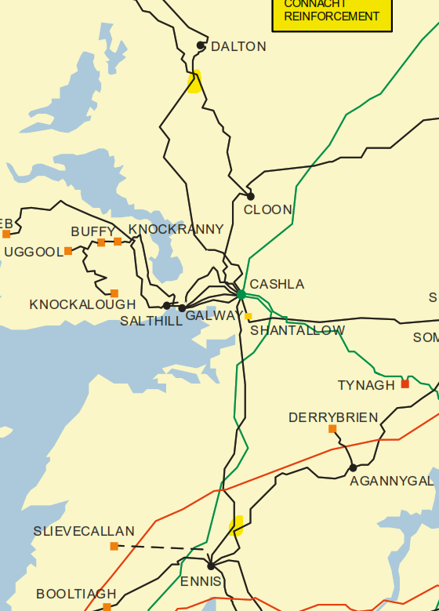
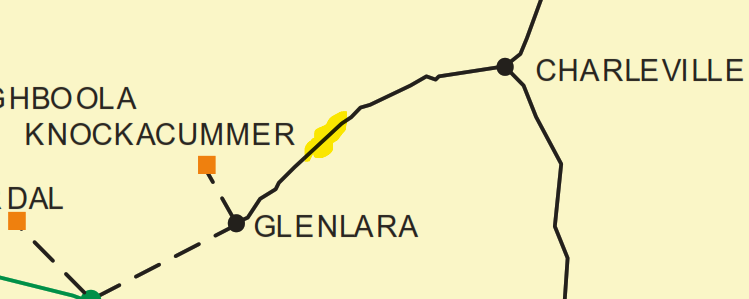
Hypothetically, if you have land in either of these general areas highlighted in the images above for solar generation development large enough to reasonably achieve 50-100 MW maximum export capacity (MEC). You may see benefit in an early screening as to which circuit would be better suited for connection.
Desktop review would reveal the following ratings for each circuit:
Cashla - Ennis 110kV (178/209 MVA)
Agannygal - Ennis 110kV (99/121 MVA)
Castlebar - Cloon 110kV (178/209 MVA)
Cashla - Doon 110kV (99/121 MVA), uprate planned according to NDP and Transmission Development Plan under CP1428
Charleville - Glenlara 110kV (99/121 MVA)
After reviewing the other network elements and generators we can obtain the first powerflow screening for each individual circuit. The below demonstrates a Summer Peak case in 2031 with solar generation dispatched to nearly 100%, wind generation dispatched to nearly 0%, storage set to 0%, interconnectors set to high export levels and other standard generation set to minimal thresholds according to minimum system operation guidelines.
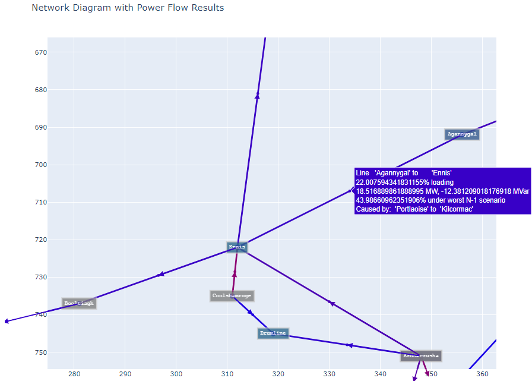
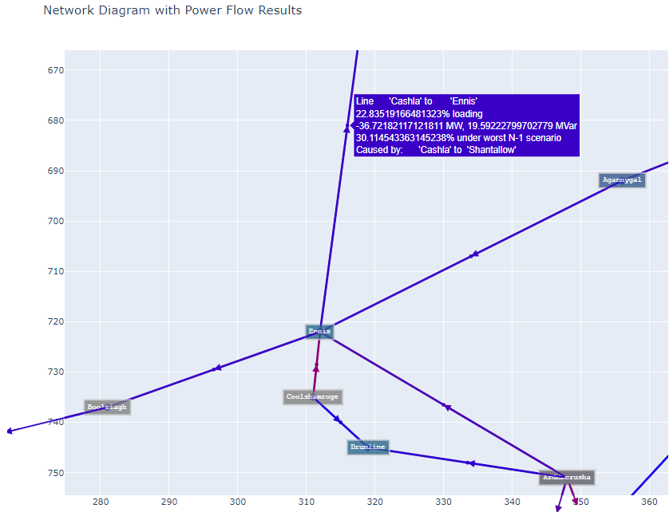
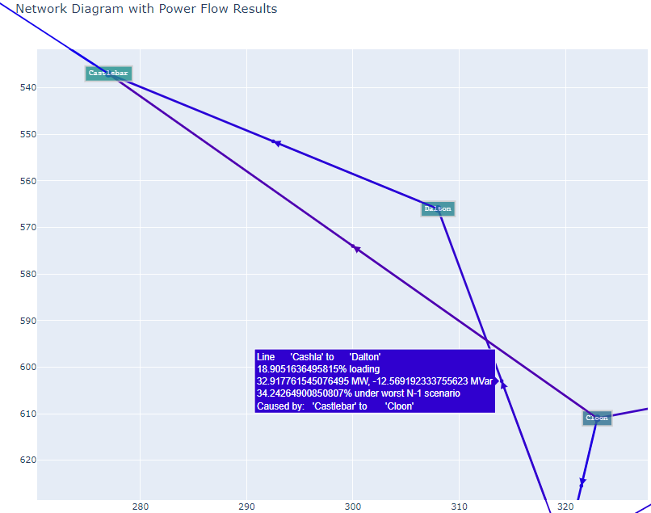
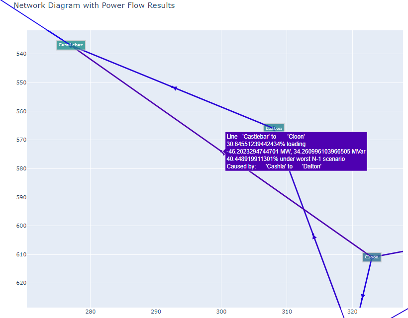
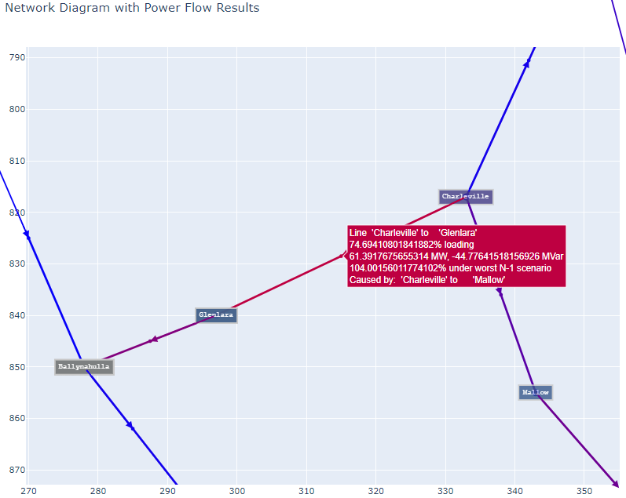
In order to get a better understanding of the performance of a sample generator at each node, DCOPF nodal analysis is run over a geographic diverse set of nodes in the system. This shows the change in net loading of the system responding to the action of that sample generator. Discharging results are shown below, but charging results are also available allowing for rapid results and judgement of how a sample demand, generator or energy storage system may perform in that unique scenario. For the previous scenario we observe the following results:
Discharging 1 MW:
Ennis: +1.41 %
Agannygal: +1.88 %
Cashla: +0.880 %
Cloon: +1.235 %
Dalton: +0.6265 %
Castlebar: +0.2057 %
Charleville: +2.92 %
Glenlara: +2.02 %
Aditionally,by varying the wind and solar dispatches and keeping the other variables unchanged, we can see that the loading shifts according to wind dominant vs. solar dominant dispatches with other variables kept the same. Highlighted in blue are the dispatches in which the wind capacity factor is increased while decreasing solar capacity factor and highlighted in orange performs the reverse. This presents how the existing generation puts pressure on the local circuits, particularly useful for the Charleville-Glenlara circuit as each is modelled with a medium/large solar and wind generator respectively.
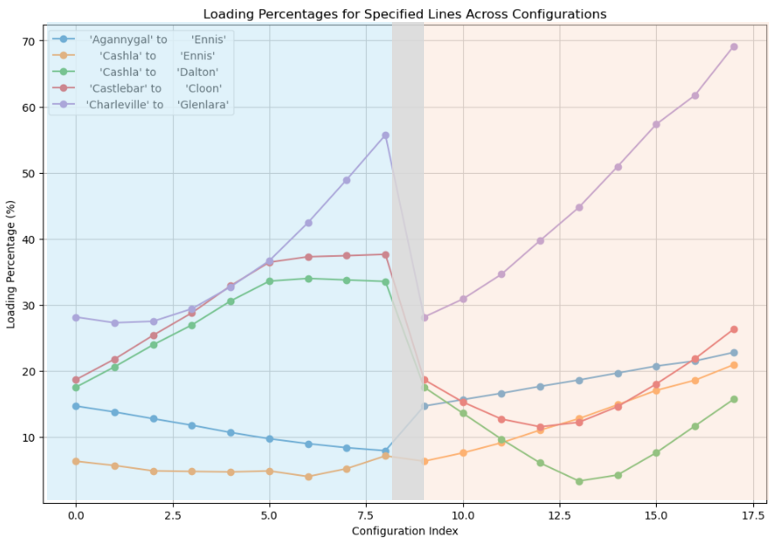
From the other cases, we can observe the impact of local battery storage projects under adjusted dispatches. The following results are chosen from mixed dispatches with all Battery Storage projects dispatched to either full import or full export.
Dispatches considered:
Summer Peak: Wind CF = 64%, Solar CF = 64%, BESS full import
Supper Peak: Wind CF = 26%, Solar CF = 26%, BESS full export
Summer Peak: Wind CF = 93%, Solar CF = 40%, BESS full import
Summer Peak: Wind CF = 35%, Solar CF = 91%, BESS full import
Summer Peak: Wind CF = 49%, Solar CF = 0.1%, BESS full export
Summer Peak: Wind CF = 0.1%, Solar CF = 54%, BESS full export
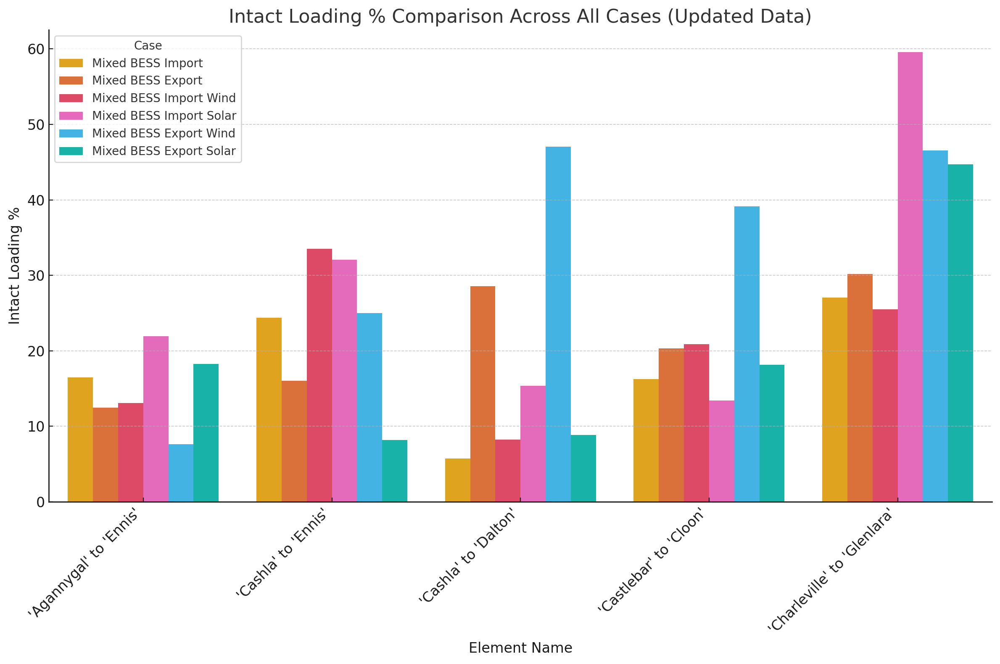
Each dispatch on its own is not meant to be disqualifying, rather they are each meant to display rare occurences in the system where most hours of operation will occur below those generation thresholds. The plot above displays the tradeoffs of locating projects closer or further away to cross technology generators. Notably, the Charleville-Glenlara circuit experiencing the highest loading of the group for dispatches that are solar dominant regardless of the BESS operation.
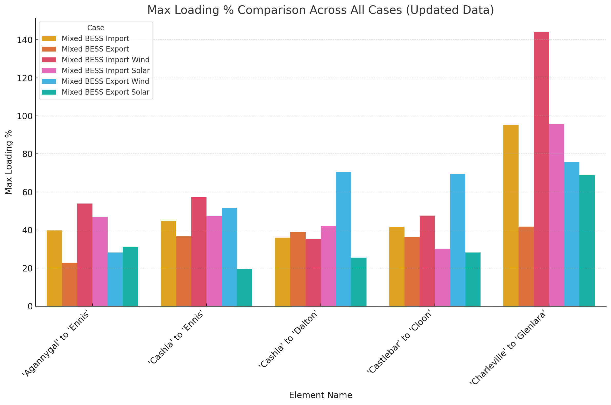
Investigating the worst case contingency results further emphasizes the previous point with the Charleville-Glenlara circuit experiencing the highest loading. This presents the opportunity to review whether the new sample generator may create a new “worst case contingency” by connecting to that circuit or make the existing worst case contingency worse.
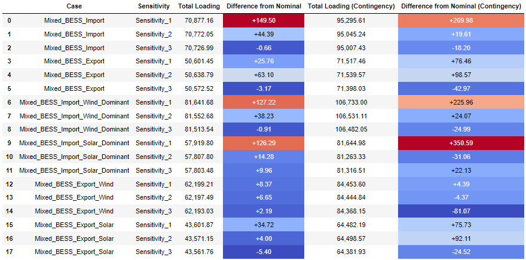
The above displays additional capability of the tool, allowing the user to easily compare different sensitivites and compare the intact and worst case contingency loading percentages against the “Nominal” system. In the above results, Sensitivity_1 represents the example project connected via “loop-in” to the Charleville-Glenlara circuit while Sensitivity_2 represents the same case except with the test PV project connected to the Cashla-Dalton circuit instead. Sensitivity_3 is un-related to the above sample test cases, but is included because it represents the impact of removing a planned circuit geographically far away from the area of interest so as to give the user context as to how a circuit focused sensitivity appears compared to a generator focused sensitivity. From the above percentages, the user has further data explaining why a new solar PV project may be better suited to connect into the Cashla-Dalton circuit compared to the Charleville-Glenlara circuit.
The exact percentages should be taken with a grain of salt and updates to system operation can be utilized to reduce extraneous line loading values. Regardless, the user is able to make a more accurate comparison of two points in the grid supported by industry recognized power flow screening methodology.